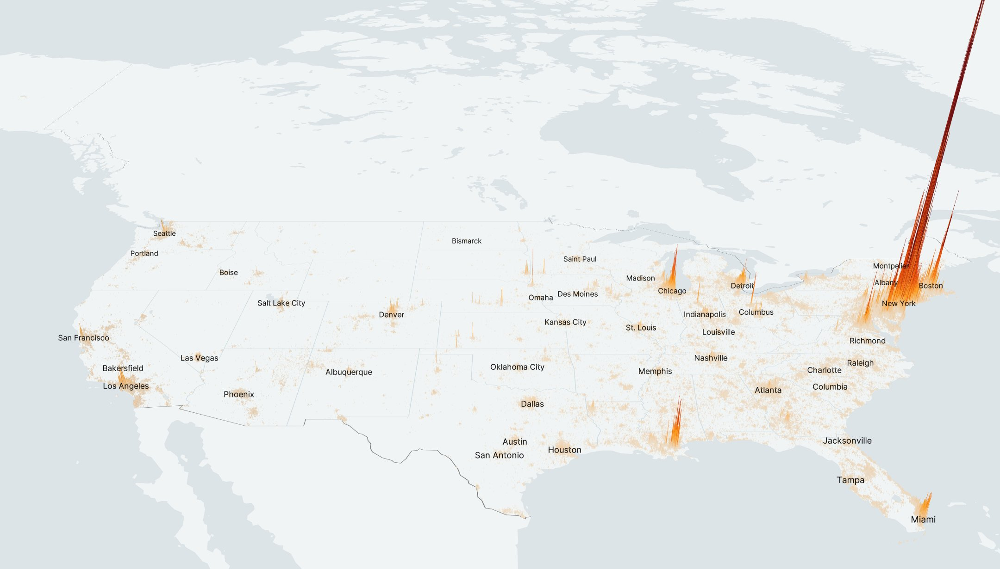

Urbanism
2023-12-09
1 Urbanization
Web Collection - Work in Progress

Cities and towns are too specialized - too monocultural, too modern, too fossil-fuel reliant - and work less well in practice than diverse places.
Urban Scaling is about non-linear relationships stemming from agglomeration of humans in geographic space.
Recently the Corona virus COVID-19 has hit - overproportionally in densely populated urban areas. Urban Epidemics is an example of Urban Scaling.
Urban Scaling can be positive - agglomeration economics of scale - or negative agglomeration diseconomics of scale - like the corona urban epidemic.
As motivation we take this 3D map of the Coronavirus (Covid-19) outbreak in the US.

Fig. 1 Confirmed Corona Cases per Population in US Counties May 2020 (Source: (topos_ai?) medium.com )
Urban Epidemics is a particular variant of Urban Scaling.
De-urbanization
Urbanization was (and is) made possible by fossil fuels. A post-oil-peak future will likely becharacterized by de-urbanization.